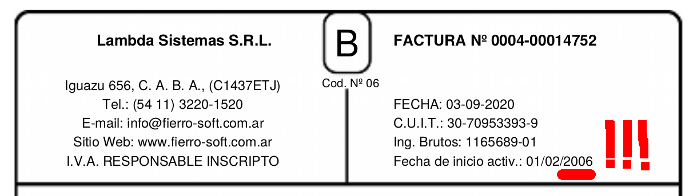
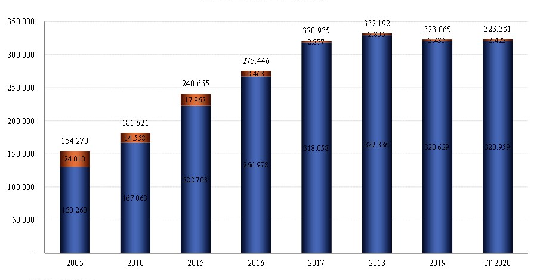
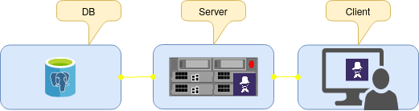

Rompiendo el monolito
“Reflexiones y experiencias en la transición desde una arquitectura monolítica a una de microservicios
Por @gnarvaja de http://radiocut.fm y Gabriel Parrondo de https://www.fierro.com.ar
Lambda Sistemas
Dos productos
- 2004: Fierro - Sistema de Gestión para Librerías y Editoriales
- 2013: RadioCut - Plataforma para escuchar radio on-demand y viralizar segmentos
Deuda Técnica
Arquitectura Monolítica
- Único (o pocos) "componentes" de software
- Un mismo lenguage, misma base de datos
- Muchas decisiones atraviesan TODO el código
- Tests larguísimos
- Alto riesgo de cambios estructurales
Microservicios
“the microservice architectural style is an approach to developing a single application as a suite of small services, each running in its own process and communicating with lightweight mechanisms, often an HTTP resource API" - Martin Fowler
Microservicios
- Alta cohesión y Bajo Acoplamiento llevados al siguiente nivel
- Distintas decisiones en cada microservicio
- Tamaño manejable
- DevOps required!
Fierro
Software empresarial: "Enterprise"
Fierro
- Aplicación cliente/servidor de 3 capas
- Un gran componente servidor
- Cliente de escritorio
- RPC clásico: amplia superficie de contacto entre ambos componentes
Fierro
Primer microservicio: Integración con Tiendanube
Middleware sencillo: toma información de catálogo y stock de Fierro y lo mantiene sincronizado en un tercero

Un cambio que vale la pena
- Métricas y monitoreo a medida
- Ciclos de feedback y release independientes de Fierro
- Probar y adoptar herramientas y tecnologías casi sin riesgo
Otros microservicios
- Imageserver: imágenes responsive a demanda
- Padrones de ARBA/AGIP/otros
Futuro de Fierro
Futuro de Fierro
- Catálogo
- Contabilidad
- RR.HH.
Cómo nos imaginamos este futuro